Figure - Embryonic RG
Daniel J. Kunz
Last updated: 2021-03-23
Checks: 7 0
Knit directory: forebrain-atlas_workflowr/
This reproducible R Markdown analysis was created with workflowr (version 1.6.2). The Checks tab describes the reproducibility checks that were applied when the results were created. The Past versions tab lists the development history.
Great! Since the R Markdown file has been committed to the Git repository, you know the exact version of the code that produced these results.
Great job! The global environment was empty. Objects defined in the global environment can affect the analysis in your R Markdown file in unknown ways. For reproduciblity it’s best to always run the code in an empty environment.
The command set.seed(20210320) was run prior to running the code in the R Markdown file. Setting a seed ensures that any results that rely on randomness, e.g. subsampling or permutations, are reproducible.
Great job! Recording the operating system, R version, and package versions is critical for reproducibility.
Nice! There were no cached chunks for this analysis, so you can be confident that you successfully produced the results during this run.
Great job! Using relative paths to the files within your workflowr project makes it easier to run your code on other machines.
Great! You are using Git for version control. Tracking code development and connecting the code version to the results is critical for reproducibility.
The results in this page were generated with repository version da0cf96. See the Past versions tab to see a history of the changes made to the R Markdown and HTML files.
Note that you need to be careful to ensure that all relevant files for the analysis have been committed to Git prior to generating the results (you can use wflow_publish or wflow_git_commit). workflowr only checks the R Markdown file, but you know if there are other scripts or data files that it depends on. Below is the status of the Git repository when the results were generated:
Untracked files:
Untracked: code/core_functions.R
Untracked: code/core_functions_supp.R
Untracked: code/core_settings.R
Untracked: data/AUC_pathways/
Untracked: data/Ependymoma_2020/
Untracked: data/Richards_2021/
Untracked: data/URD/
Untracked: data/annot/
Untracked: data/cyclone/
Untracked: data/external_metadata/
Untracked: data/forebrain_normal.h5ad
Untracked: data/forebrain_normal_E12_5.h5ad
Untracked: data/forebrain_normal_E12_5_subset_neuronal_glial.h5ad
Untracked: data/forebrain_normal_E14_5.h5ad
Untracked: data/forebrain_normal_E14_5_subset_neuronal_glial.h5ad
Untracked: data/forebrain_normal_E16_5.h5ad
Untracked: data/forebrain_normal_E16_5_subset_neuronal_glial.h5ad
Untracked: data/forebrain_normal_P0.h5ad
Untracked: data/forebrain_normal_P0_subset_neuronal_glial.h5ad
Untracked: data/forebrain_normal_P111.h5ad
Untracked: data/forebrain_normal_P111_subset_neuronal_glial.h5ad
Untracked: data/forebrain_normal_P13.h5ad
Untracked: data/forebrain_normal_P13_subset_neuronal_glial.h5ad
Untracked: data/forebrain_normal_P19.h5ad
Untracked: data/forebrain_normal_P19_subset_neuronal_glial.h5ad
Untracked: data/forebrain_normal_P2.h5ad
Untracked: data/forebrain_normal_P2_subset_neuronal_glial.h5ad
Untracked: data/forebrain_normal_P365.h5ad
Untracked: data/forebrain_normal_P365_subset_neuronal_glial.h5ad
Untracked: data/forebrain_normal_P39.h5ad
Untracked: data/forebrain_normal_P39_subset_neuronal_glial.h5ad
Untracked: data/forebrain_normal_P7.h5ad
Untracked: data/forebrain_normal_P7_subset_neuronal_glial.h5ad
Untracked: data/forebrain_normal_merged_RG_NSC_lineage.h5ad
Untracked: data/forebrain_normal_merged_RG_aNSC_lineage.h5ad
Untracked: data/forebrain_normal_merged_subset_neuronal_glial.h5ad
Untracked: data/forebrain_normal_merged_subset_neuronal_glial_cleaned.h5ad
Untracked: data/forebrain_normal_merged_subset_neuronal_glial_cleaned_harmony.h5ad
Untracked: data/forebrain_normal_merged_subset_neuronal_glial_subset_RG_OPC_NSC_lineage.h5ad
Untracked: data/forebrain_normal_merged_subset_neuronal_glial_subset_RG_OPC_NSC_lineage_cleaned.h5ad
Untracked: data/forebrain_normal_subset_OPCs.h5ad
Untracked: data/forebrain_normal_subset_RG.h5ad
Untracked: data/forebrain_normal_subset_aNSCs.h5ad
Untracked: data/forebrain_normal_subset_embryonic_RG.h5ad
Untracked: data/forebrain_normal_subset_embryonic_RG_cleaned.h5ad
Untracked: data/forebrain_normal_subset_embryonic_RG_cleaned_wo_gliogenic.h5ad
Untracked: data/forebrain_normal_subset_ependymal.h5ad
Untracked: data/forebrain_normal_subset_ependymal_cleaned.h5ad
Untracked: data/forebrain_normal_subset_juvenile_RG_TAPs.h5ad
Untracked: data/forebrain_normal_subset_juvenile_RG_TAPs_subset_juvenile_RG.h5ad
Untracked: data/forebrain_normal_subset_neuronal_glial.h5ad
Untracked: data/forebrain_normal_subset_neuronal_glial_cleaned.h5ad
Untracked: data/forebrain_normal_subset_neuronal_glial_cleaned_subset_NBs.h5ad
Untracked: data/forebrain_normal_subset_neuronal_glial_cleaned_subset_NBs_cleaned.h5ad
Untracked: data/forebrain_normal_subset_neuronal_glial_cleaned_subset_OPCs.h5ad
Untracked: data/forebrain_normal_subset_neuronal_glial_cleaned_subset_RG.h5ad
Untracked: data/forebrain_normal_subset_neuronal_glial_cleaned_subset_RG_NSC_OPC_lineage.h5ad
Untracked: data/forebrain_normal_subset_neuronal_glial_cleaned_subset_RG_NSC_lineage.h5ad
Untracked: data/forebrain_normal_subset_neuronal_glial_cleaned_subset_RG_NSC_lineage_cleaned.h5ad
Untracked: data/forebrain_normal_subset_neuronal_glial_cleaned_subset_RG_NSC_lineage_v2.h5ad
Untracked: data/forebrain_normal_subset_neuronal_glial_cleaned_subset_RG_NSC_lineage_v2_cleaned.h5ad
Untracked: data/forebrain_normal_subset_neuronal_glial_cleaned_subset_ependymal.h5ad
Untracked: data/forebrain_normal_subset_neuronal_glial_cleaned_subset_ependymal_cleaned.h5ad
Untracked: data/forebrain_normal_subset_neuronal_glial_cleaned_subset_neuroblasts.h5ad
Untracked: data/forebrain_normal_subset_neuronal_glial_cleaned_subset_qNSCs.h5ad
Untracked: data/forebrain_normal_subset_qNSCs.h5ad
Untracked: data/gene-groups/
Untracked: data/logreg/
Untracked: data/metadata/
Untracked: data/metadata_QC_normal.csv.gz
Untracked: data/metadata_QC_normal_pass.csv.gz
Untracked: data/metadata_experiment.tsv
Untracked: data/monocle_3/
Untracked: data/pagoda/
Untracked: data/scenic/
Untracked: data/scrublet_scores/
Untracked: data/supplementary_data/
Untracked: figures/
Untracked: output/normal/
Untracked: output/normal_merged_RG_NSC_lineage/
Untracked: output/normal_merged_RG_aNSC_lineage/
Untracked: output/normal_subset_OPCs/
Untracked: output/normal_subset_embryonic_RG_cleaned/
Untracked: output/normal_subset_ependymal_cleaned/
Untracked: output/normal_subset_neuronal_glial_cleaned_subset_NBs_cleaned/
Untracked: output/normal_subset_neuronal_glial_cleaned_subset_RG_NSC_lineage/
Untracked: output/normal_subset_neuronal_glial_cleaned_subset_qNSCs/
Untracked: output/normal_subset_qNSCs/
Unstaged changes:
Deleted: analysis/about.Rmd
Deleted: analysis/license.Rmd
Note that any generated files, e.g. HTML, png, CSS, etc., are not included in this status report because it is ok for generated content to have uncommitted changes.
There are no past versions. Publish this analysis with wflow_publish() to start tracking its development.
Overview of the developmental data-set.
knitr::opts_chunk$set(autodep = TRUE)
library(ggplot2)
library(viridis)
library(patchwork)
library(ggrepel)
library(readr)
library(dplyr)
library(tibble)
library(knitr)
library(kableExtra)
library(reticulate)
source("code/core_settings.R")
source("code/core_functions.R")# set parameters
fileID = "normal_subset_embryonic_RG_cleaned"
leiden_res = 'leiden_0_33'
leiden_res_annot = 'annot_leiden'
adata_path = paste0('data/forebrain_', fileID, '.h5ad')
celltype_colours = embryonic_RG_colours
colour_celltypes = embryonic_RG_colours
annot_order = c("Pretectum",
"Epithalamus",
"Cortical pallium",
"Ganglionic eminence",
"Thalamic eminence",
"Subthalamic nucleus",
"Cortical hem",
"Gliogenic (ganglionic)",
"Gliogenic (cortical)")#repl_python()
py_run_string("import numpy as np")
py_run_string("import anndata as ad")
py_run_string("adata = ad.read_h5ad(r.adata_path)")metadata_scanpy = as_tibble(py$adata$obs, rownames="cellID") %>%
rename(mt_frac = percent_mito) %>%
mutate(UMAP_dim1 = py$adata$obsm[['X_umap']][,1],
UMAP_dim2 = py$adata$obsm[['X_umap']][,2])
metadata_experiment = read_tsv("data/metadata_experiment.tsv")
results_cyclone = read_csv("data/cyclone/cyclone_merged.csv.gz", col_types="ccddd") %>%
mutate(sampleID = sapply(cellID, function(cell) strsplit(cell, split="-")[[1]][3])) %>%
left_join(metadata_experiment, by="sampleID") %>%
mutate(cellID = gsub("-1", "", cellID)) %>%
select(cellID, cyclone, cyclone_G1, cyclone_S, cyclone_G2M)
results_logreg = read_csv(paste0("data/logreg/logreg_Zeisel_2018_normal.csv.gz"))
# filter QC
metadata = left_join(metadata_scanpy, results_cyclone, by="cellID") %>%
mutate(cyclone = factor(cyclone, levels=c("G1", "S", "G2M"))) %>%
mutate(timepoint = factor(timepoint, levels=unique(timepoint)[order(unique(postnatal_day))])) %>%
left_join(results_logreg, by="cellID") %>%
mutate(leiden = get(leiden_res))metadata = metadata %>%
mutate(prediction_TaxonomyRank1 = gsub("Neurons", "Neuronal", prediction_TaxonomyRank1)) %>%
mutate(prediction_TaxonomyRank1 = gsub("^Glia$", "Glial", prediction_TaxonomyRank1)) %>%
mutate(gate_gfp = gsub("SOX2_-ve", "GFP-", gate)) %>%
mutate(gate_gfp = gsub("SOX2_\\+ve", "GFP+ [SOX2]", gate_gfp)) %>%
mutate(annot_leiden = plyr::revalue(annot_leiden, c("[unclear/debris]" = NA)))The following `from` values were not present in `x`: [unclear/debris]Timepoints
library(ggrastr)
plt_UMAP_day = ggplot(slice(metadata, sample(1:n())), aes(x=UMAP_dim1, y=UMAP_dim2, colour=timepoint)) +
geom_point(size=0.05, alpha=0.8, shape=16) +
# geom_point_rast(size=0.05, alpha=0.8, shape=16, raster.dpi=300) +
# scale_colour_viridis(discrete=T) +
scale_color_manual(values=colour_timepoints) +
theme_publication +
labs(x="UMAP 1", y="UMAP 2") +
theme(axis.text.x=element_blank(),
axis.ticks.x=element_blank(),
axis.text.y=element_blank(),
axis.ticks.y=element_blank()) +
labs(colour="Time point") +
guides(colour = guide_legend(override.aes = list(size=2),
keyheight=0.3,
default.unit="cm"))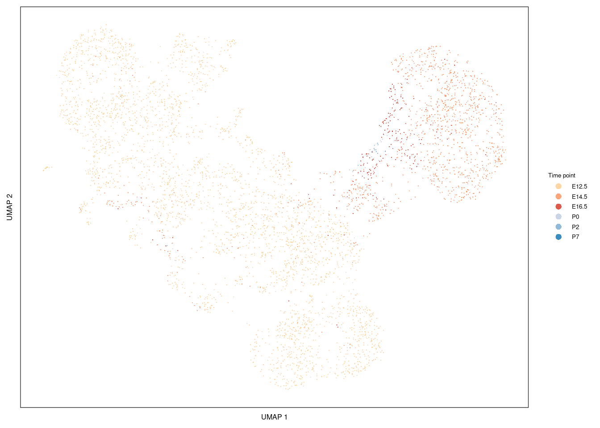
Logreg & RNA velocity
library(png)
library(grid)
tbl_annot_coarse_empty = tibble(annot_coarse = factor(names(colour_timepoints)[1:6], levels=names(colour_timepoints)[1:6]),
UMAP_dim1 = c(0, 1, 0, 1, 1, 1),
UMAP_dim2 = c(0, 1, 0, 1, 1, 1))
plt_UMAP_empty = ggplot(tbl_annot_coarse_empty, aes(x=UMAP_dim1, y=UMAP_dim2, colour=annot_coarse)) +
# geom_blank() +
geom_point(shape=16, alpha=0) +
scale_color_manual(values=c(colour_timepoints[1:6]), drop=FALSE) +
theme_publication +
labs(x="UMAP 1", y="UMAP 2") +
theme(axis.text.x=element_blank(),
axis.ticks.x=element_blank(),
axis.text.y=element_blank(),
axis.ticks.y=element_blank()) +
labs(colour="Time point") +
guides(colour = guide_legend(override.aes = list(alpha=1, size=2),
keyheight=0.3,
default.unit="cm"))
img_velo = readPNG("figures/figure_embryonic_RG/scvelo/scvelo_stochastic_normal_subset_embryonic_RG_cleaned_timepoint_dpi_600_no_legend.png")
g_velo = rasterGrob(img_velo, interpolate=TRUE)
plt_velocyto = plt_UMAP_empty +
annotation_custom(g_velo, xmin=-Inf, xmax=Inf, ymin=-Inf, ymax=Inf)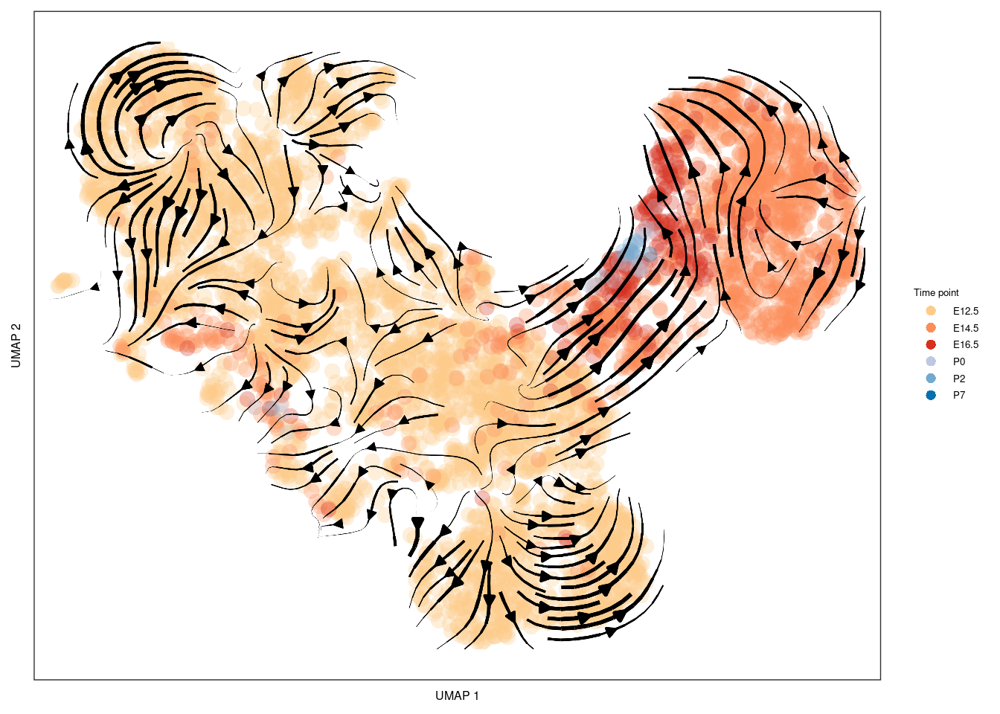
Cluster annotation
library(ggrepel)
library(ggthemes)
library(ggrastr)
plot_UMAP_leiden <- function(leiden_key){
metadata = metadata %>%
mutate(leiden = get(leiden_key))
cl_cent = metadata %>%
select(UMAP_dim1, UMAP_dim2, leiden) %>%
group_by(leiden) %>%
summarize_all(mean)
# randomise order for plot
plt_UMAP_leiden = ggplot(slice(metadata, sample(1:n())), aes(x=UMAP_dim1, y=UMAP_dim2, colour=leiden)) +
geom_point(size=0.7, stroke=0, alpha=0.8, shape=16) +
# geom_point_rast(size=0.2, alpha=0.8, shape=16, raster.dpi=300) +
# geom_point_rast(size=0.2, alpha=0.8, shape=16, raster.dpi=600) +
geom_label_repel(aes(x=UMAP_dim1, y=UMAP_dim2, label=leiden),
fill='white', colour='black', label.size=NA,
alpha=0.9, label.padding = 0.1, point.padding = 0,
data=cl_cent, size=1.78, show.legend=FALSE, inherit.aes=F) +
scale_colour_manual(values=celltype_colours) +
theme_publication +
labs(x="UMAP 1", y="UMAP 2") +
theme(axis.text.x=element_blank(),
axis.ticks.x=element_blank(),
axis.text.y=element_blank(),
axis.ticks.y=element_blank()) +
# guides(color = guide_legend(override.aes = list(size=3))) +
# labs(colour="Leiden")
# labs(title=paste0(leiden_key)) +
theme(legend.position="none")
return(plt_UMAP_leiden)
}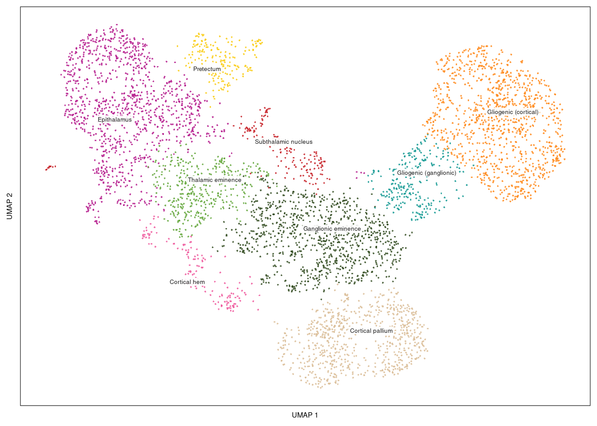
Markers - Embryonic RG
# marker_list = c("Sox2", "Nes", "Prom1", "Hes1", "Pax6", "Otx2", "Pax3", "Irx1",
# "Irx2", "Irx5", "Olig3", "Tcf7l2", "Pitx2", "Rspo2", "Rspo3", "Bmp4", "Emx1", "Emx2",
# "Nkx2-1", "Olig2", "Slc1a3", "Aldoc")
marker_list = c("Sox2", "Nes", "Prom1", "Hes1", "Pax6", "Otx2", "Pax3", "Irx1",
"Irx2", "Irx5", "Emx1", "Emx2", "Nkx2-1", "Olig2", "Olig3", "Tcf7l2", "Pitx2", "Rspo2", "Rspo3", "Bmp4", "Slc1a3", "Aldoc")
tbl_markers = get_adata_raw_expr(marker_list) %>%
left_join(metadata %>% select(annot_leiden, cellID), by="cellID") %>%
rename("leiden_res_annot" = annot_leiden) %>%
select(-cellID)
tbl_markers_melt = as_tibble(melt(tbl_markers, id.vars="leiden_res_annot", value.name="expr", variable.name='geneID')) %>%
mutate(geneID = gsub("^expr_", "", geneID)) %>%
mutate(geneID = gsub("Nkx2_1", "Nkx2-1", geneID)) %>%
filter(geneID %in% marker_list)
tbl_markers_average = tbl_markers_melt %>%
group_by(geneID, leiden_res_annot) %>%
summarise(mean_expr = mean(expr),
fraction_expressed = sum(expr > 0)/n()) %>%
group_by(geneID) %>%
mutate(mean_expr = mean_expr/max(mean_expr)) %>%
ungroup()`summarise()` has grouped output by 'geneID'. You can override using the `.groups` argument.tbl_markers_sub = tbl_markers_average %>% select(-fraction_expressed)
data_wide = tidyr::spread(tbl_markers_sub, leiden_res_annot, mean_expr)
cmat = data_wide %>% ungroup() %>% select(-geneID) %>% as.matrix()
rownames(cmat) = as.vector(data_wide$geneID)tbl_markers_average = tbl_markers_average %>%
mutate(leiden_res_annot = factor(leiden_res_annot, levels = annot_order)) %>%
# mutate(geneID = factor(geneID, levels =rownames(cmat)[mat_cluster_rows$order]))
mutate(geneID = factor(geneID, levels=marker_list))
plt_cluster_marker_expr = ggplot(tbl_markers_average, aes(x=geneID, y=leiden_res_annot, fill=mean_expr)) +
geom_tile() +
scale_fill_distiller(palette = 'RdYlBu', breaks=c(0, 0.5, 1), limits=c(0,1)) +
theme_publication +
labs(x=NULL, y=NULL) +
scale_x_discrete(expand = c(0,0)) +
scale_y_discrete(expand = c(0,0)) +
labs(fill="Expr (scaled)") +
theme(axis.text.x = element_text(angle = 90, vjust=0.5, hjust=1)) +
# guides(fill = guide_colorbar(barwidth = 0.5,
# barheight = 3))
guides(fill = guide_colorbar(barwidth = 0.3,
barheight = 2))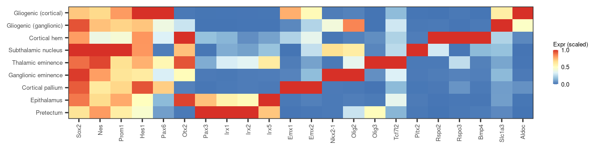
tbl_expr = get_adata_raw_expr(marker_list)
tbl_DE_expr = metadata %>%
select(cellID, !!(leiden_res_annot)) %>%
# mutate(clusterID = get(leiden_res_annot)) %>%
mutate(clusterID = get(leiden_res_annot)) %>%
mutate(clusterID = gsub(" precursors", "", clusterID)) %>%
mutate(clusterID = gsub("Early gliogenic", "Gliogenic", clusterID)) %>%
left_join(tbl_expr, by="cellID") %>%
tidyr::pivot_longer(starts_with("expr_"), names_to="geneID", values_to="expr") %>%
mutate(geneID = gsub("expr_", "", geneID)) %>%
group_by(geneID, clusterID) %>%
summarise(frac_expressed = sum(expr > 0)/length(expr),
expr_average = mean(expr)) %>%
ungroup() %>%
group_by(geneID) %>%
mutate(expr_scaled = expr_average/max(expr_average)) %>%
# mutate(expr_scaled = (expr_average - min(expr_average))/(max(expr_average) - min(expr_average))) %>%
# mutate(expr_scaled = (expr - min(expr))/(max(expr) - min(expr))) %>%
# mutate(expr_scaled_cut = ifelse(expr_scaled > 2.5, 2.5, ifelse(expr_scaled < -2.5, -2.5, expr_scaled))) %>%
ungroup() %>%
mutate(clusterID = factor(clusterID, levels = annot_order)) %>%
mutate(geneID = factor(geneID, levels = marker_list))`summarise()` has grouped output by 'geneID'. You can override using the `.groups` argument.# expr_Gene
plt_DE_dotplot = ggplot(tbl_DE_expr, aes(x=geneID, y=clusterID, size=frac_expressed, colour=expr_scaled)) +
# geom_point() +
# scale_size_continuous(range = c(0.1, 2.0), limits=c(0, 1), breaks = c(0.1, 0.5, 1.0)) +
geom_point(stroke=0) +
scale_size_continuous(range = c(0, 2.0), limits=c(0, 1), breaks = c(0, 0.5, 1.0)) +
theme_publication +
scale_colour_distiller(palette = 'RdYlBu', breaks=c(0, 0.5, 1), limits=c(0,1)) +
labs(x=NULL, y=NULL) +
labs(colour = "Expr (scaled)") +
guides(colour = guide_colorbar(barwidth = 0.3,
barheight = 1.5)) +
theme(axis.text.x = element_text(angle = 90, vjust=0.5, hjust=1)) +
labs(size = "Fraction expressing") +
theme(legend.spacing.y = unit(0.05, 'cm')) +
theme(legend.key.height = unit(0.2, "cm"))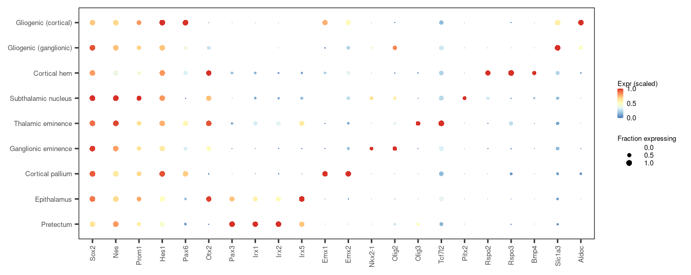
Distribution of cell types
tbl_counts = metadata %>%
mutate(annot = as.vector(annot_leiden)) %>%
select(annot, timepoint, gate, sampleID, "Estimated Number of Cells") %>%
rename(n_estimated = "Estimated Number of Cells")
# NB replace by cells that passed QC later!
metadata_cellranger = metadata_experiment %>%
filter(set == "set1") %>%
mutate(timepoint_gate = paste0(timepoint, "_", gate)) %>%
select(sampleID, timepoint_gate, "Estimated Number of Cells") %>%
rename(n_estimated = "Estimated Number of Cells")
tbl_fracs = tbl_counts %>%
group_by(annot, timepoint, gate, .drop=FALSE) %>%
summarise(n_group = n()) %>%
mutate(timepoint_gate = paste0(timepoint, "_", gate)) %>%
left_join(metadata_cellranger, by="timepoint_gate") %>%
mutate(frac_group = n_group/n_estimated) %>%
mutate(timepoint_numeric = as.numeric(timepoint)) %>%
group_by(timepoint, annot) %>%
mutate(frac_mean = mean(frac_group)) %>%
ungroup() %>%
group_by(timepoint) %>%
mutate(frac_sum_timepoint = sum(frac_mean)/2) %>%
ungroup() %>%
group_by(annot) %>%
mutate(frac_sum_annot = sum(frac_mean)/2) %>%
ungroup() %>%
mutate(frac_sum = sum(frac_mean)/2) %>%
group_by(timepoint, annot) %>%
mutate(frac_mean_norm = frac_mean/frac_sum) %>%
mutate(frac_mean_norm_timepoint = frac_mean/frac_sum_timepoint) %>%
mutate(frac_mean_norm_annot = frac_mean/frac_sum_annot) %>%
ungroup() %>%
arrange(timepoint) %>%
mutate(annot = factor(annot, levels=annot_order))`summarise()` has grouped output by 'annot', 'timepoint'. You can override using the `.groups` argument.# tbl_fracs = tbl_fracs %>% filter(timepoint %in% c("E12.5", "E14.5", "E16.5", "P0", "P2", "P7")) %>% mutate(timepoint = factor(timepoint, levels = c("E12.5", "E14.5", "E16.5", "P0", "P2", "P7")))
plt_cluster_frac = ggplot(tbl_fracs %>% select(timepoint_numeric, frac_mean_norm, annot) %>% unique(), aes(x=timepoint_numeric, y=frac_mean_norm, fill=annot)) +
geom_bar(position="dodge", stat="identity") +
scale_fill_manual(values=colour_celltypes) +
scale_x_continuous(breaks=unique(tbl_fracs$timepoint_numeric), labels=levels(tbl_fracs$timepoint)) +
labs(x = NULL) +
labs(y = "Relative fraction") +
labs(fill="Cluster") +
theme_grey() +
theme(text=element_text(size=5), axis.text=element_text(size=5), axis.title=element_text(size=6), plot.title=element_text(size=6, hjust=0.5)) +
theme(panel.grid.major.x = element_blank(), panel.grid.minor.x = element_blank()) +
theme(plot.tag=element_text(size=10, face="bold")) +
# remove facet box
theme(strip.background = element_blank()) +
theme(legend.position="none")
plt_cluster_frac_norm_annot = ggplot(tbl_fracs %>% select(timepoint_numeric, frac_mean_norm_annot, annot) %>% unique(), aes(x=timepoint_numeric, y=frac_mean_norm_annot, fill=annot)) +
geom_bar(position="dodge", stat="identity") +
scale_fill_manual(values=colour_celltypes) +
scale_x_continuous(breaks=unique(tbl_fracs$timepoint_numeric), labels=levels(tbl_fracs$timepoint)) +
labs(x = NULL) +
labs(y = "Rel. fraction (cluster)") +
labs(fill="Cluster") +
theme_grey() +
theme(text=element_text(size=5), axis.text=element_text(size=5), axis.title=element_text(size=6), plot.title=element_text(size=6, hjust=0.5)) +
theme(panel.grid.major.x = element_blank(), panel.grid.minor.x = element_blank()) +
theme(plot.tag=element_text(size=10, face="bold")) +
# remove facet box
theme(strip.background = element_blank()) +
theme(legend.position="none")
plt_cluster_frac_norm_timepoint = ggplot(tbl_fracs %>% select(timepoint_numeric, frac_mean_norm_timepoint, annot) %>% unique(), aes(x=timepoint_numeric, y=frac_mean_norm_timepoint, fill=annot)) +
geom_bar(position="dodge", stat="identity") +
scale_fill_manual(values=colour_celltypes) +
scale_x_continuous(breaks=unique(tbl_fracs$timepoint_numeric), labels=levels(tbl_fracs$timepoint)) +
labs(x = NULL) +
labs(y = "Rel. fraction (time point)") +
labs(fill="Cluster") +
theme_grey() +
theme(text=element_text(size=5), axis.text=element_text(size=5), axis.title=element_text(size=6), plot.title=element_text(size=6, hjust=0.5)) +
theme(panel.grid.major.x = element_blank(), panel.grid.minor.x = element_blank()) +
theme(plot.tag=element_text(size=10, face="bold")) +
# remove facet box
theme(strip.background = element_blank()) +
theme(legend.position="none")Norm by cluster
plt_cluster_frac_norm_annot_v1 = plt_cluster_frac_norm_annot +
theme_bw() +
theme(text=element_text(size=5), axis.text=element_text(size=5), axis.title=element_text(size=6), plot.title=element_text(size=6, hjust=0.5)) +
theme(panel.grid.major.x = element_blank(), panel.grid.minor.x = element_blank()) +
theme(plot.tag=element_text(size=10, face="bold")) +
# remove facet box
theme(strip.background = element_blank()) +
theme(legend.position="none") +
theme(panel.border = element_blank()) +
scale_y_continuous(expand = c(0,0), limit=c(0,1))
plt_cluster_frac_norm_annot_v1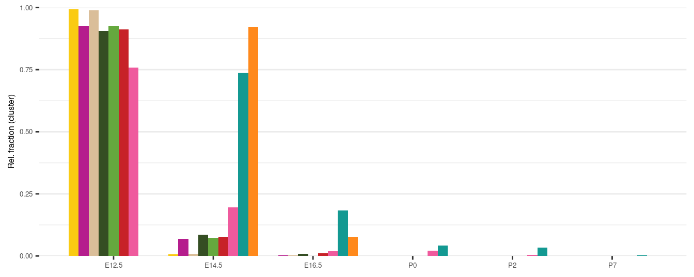
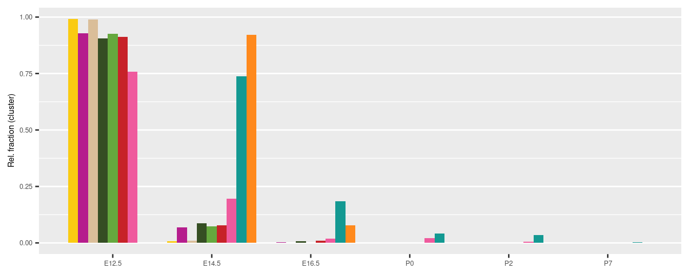
Norm by timepoint
tbl_fracs = tbl_fracs %>% filter(timepoint %in% c("E12.5", "E14.5", "E16.5")) %>% mutate(timepoint = factor(timepoint, levels = c("E12.5", "E14.5", "E16.5")))
plt_cluster_frac_norm_annot_timepoint_embryonic = ggplot(tbl_fracs %>% select(timepoint_numeric, frac_mean_norm_annot, annot) %>% unique(), aes(x=timepoint_numeric, y=frac_mean_norm_annot, fill=annot)) +
geom_bar(position="dodge", stat="identity") +
scale_fill_manual(values=colour_celltypes) +
scale_x_continuous(breaks=unique(tbl_fracs$timepoint_numeric), labels=levels(tbl_fracs$timepoint)) +
labs(x = NULL) +
labs(y = "Rel. fraction (cluster)") +
labs(fill="Cluster") +
theme_grey() +
theme(text=element_text(size=5), axis.text=element_text(size=5), axis.title=element_text(size=6), plot.title=element_text(size=6, hjust=0.5)) +
theme(panel.grid.major.x = element_blank(), panel.grid.minor.x = element_blank()) +
theme(plot.tag=element_text(size=10, face="bold")) +
# remove facet box
theme(strip.background = element_blank()) +
theme(legend.position="none")plt_cluster_frac_norm_annot_timepoint_embryonic_v1 = plt_cluster_frac_norm_annot_timepoint_embryonic +
theme_bw() +
theme(text=element_text(size=5), axis.text=element_text(size=5), axis.title=element_text(size=6), plot.title=element_text(size=6, hjust=0.5)) +
theme(panel.grid.major.x = element_blank(), panel.grid.minor.x = element_blank()) +
theme(plot.tag=element_text(size=10, face="bold")) +
# remove facet box
theme(strip.background = element_blank()) +
theme(legend.position="none") +
theme(panel.border = element_blank()) +
scale_y_continuous(expand = c(0,0), limit=c(0,1))
plt_cluster_frac_norm_annot_timepoint_embryonic_v1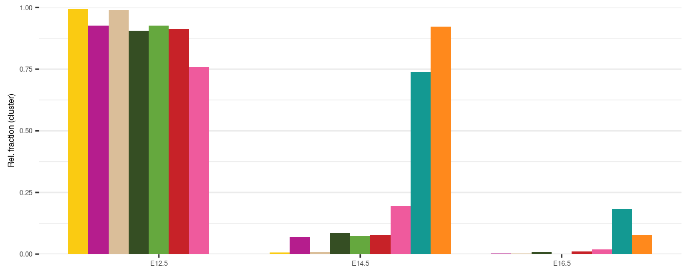
plt_cluster_frac_norm_annot_timepoint_embryonic_v2 = plt_cluster_frac_norm_annot_timepoint_embryonic
plt_cluster_frac_norm_annot_timepoint_embryonic_v2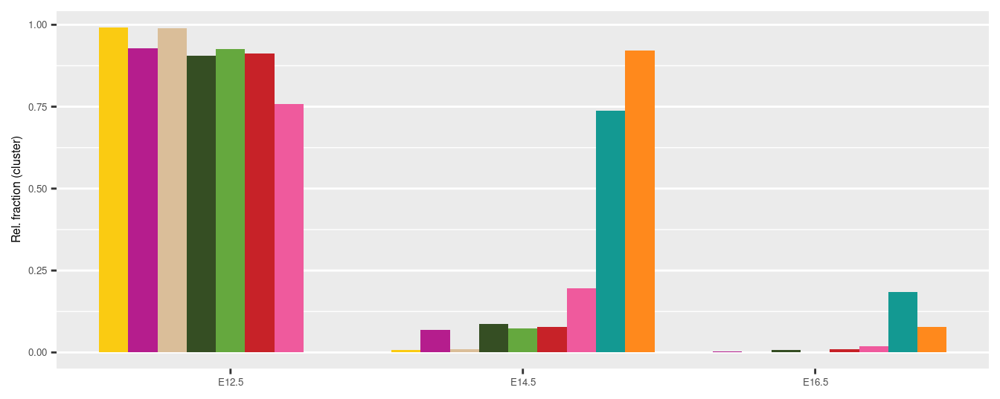
DE Top 50
n_top=50
file_paths_DE = list.files(path="output/normal_subset_embryonic_RG_cleaned/DE-voom_limma", pattern="DE-voom_limma_normal_subset_embryonic_RG_cleaned_DE_leiden_0_33*", full.names=T)
top_DE = c()
for (file_path in file_paths_DE){
top_DE_cluster = read_csv(file_path, col_types="cddddddd") %>%
arrange(qval, log2fc) %>%
filter(qval < 0.05) %>%
filter(log2fc < 0) %>%
slice(1:n_top) %>%
pull(geneID)
top_DE = c(top_DE, top_DE_cluster)
}
top_DE = top_DE %>% unique()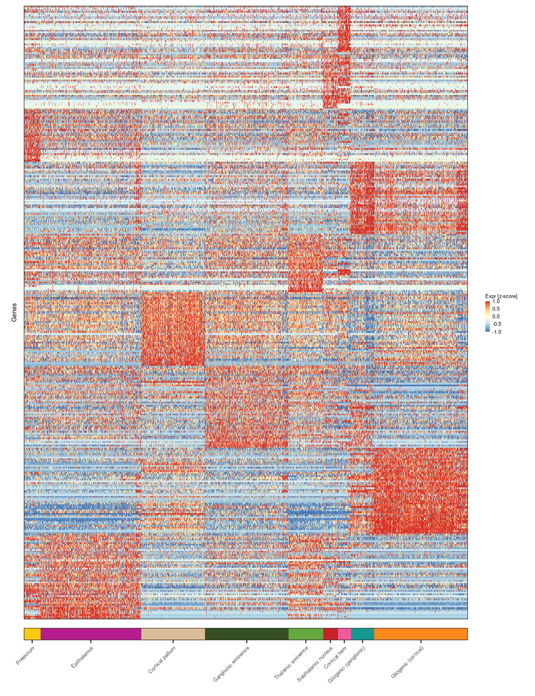
Top 10 DE Markers based on cluster LFC
file_paths_DE = list.files(path=paste0("output/", fileID, "/DE-voom_limma"), pattern="DE-voom_limma_*.*_DE_leiden_0_*", full.names=T)
tbl_top_DE = tibble(geneID = character(),
cluster_LFC = numeric(),
clusterID = character())
for (file_path in file_paths_DE){
fileID = basename(file_path)
clusterID = stringr::str_extract(stringr::str_extract(fileID, "cl_[0-9]+_vs_rest"), "[0-9]+")
top_DE_cluster = read_csv(file_path, col_types="cddddddd") %>%
filter(qval < 0.05) %>%
filter(log2fc < 0) %>%
arrange(cluster_LFC) %>%
slice(1:10) %>%
mutate(clusterID = clusterID) %>%
select(geneID, cluster_LFC, clusterID)
tbl_top_DE = bind_rows(tbl_top_DE, top_DE_cluster)
}
tbl_top_DE = tbl_top_DE %>%
left_join(metadata %>%
mutate(clusterID = leiden) %>%
select(clusterID, annot_leiden) %>%
distinct(), by="clusterID") %>%
mutate(annot_leiden = factor(annot_leiden, levels=annot_order)) %>%
arrange(annot_leiden, cluster_LFC)
top_DE = tbl_top_DE %>%
pull(geneID) %>%
unique()marker_list = top_DE
tbl_markers = get_adata_raw_expr(marker_list) %>%
left_join(metadata %>% select(!!(leiden_res_annot), cellID), by="cellID") %>%
rename("leiden_res_annot" = !!(leiden_res_annot)) %>%
select(-cellID)
tbl_markers_melt = as_tibble(melt(tbl_markers, id.vars="leiden_res_annot", value.name="expr", variable.name='geneID')) %>%
mutate(geneID = gsub("^expr_", "", geneID)) %>%
mutate(geneID = gsub("Nkx2_1", "Nkx2-1", geneID)) %>%
filter(geneID %in% marker_list)
tbl_markers_average = tbl_markers_melt %>%
group_by(geneID, leiden_res_annot) %>%
# mutate(expr = (expr - min(expr))/(max(expr) - min(expr))) %>%
summarise(mean_expr = mean(expr),
fraction_expressed = sum(expr > 0)/n()) %>%
group_by(geneID) %>%
mutate(mean_expr = mean_expr/max(mean_expr)) %>%
ungroup()
tbl_markers_sub = tbl_markers_average %>% select(-fraction_expressed)
data_wide = tidyr::spread(tbl_markers_sub, leiden_res_annot, mean_expr)
cmat = data_wide %>% ungroup() %>% select(-geneID) %>% as.matrix()
rownames(cmat) = as.vector(data_wide$geneID)tbl_markers_average = tbl_markers_average %>%
mutate(leiden_res_annot = factor(leiden_res_annot, levels = annot_order)) %>%
# mutate(leiden_res_annot = factor(leiden_res_annot, levels=c("Embryonic RG", "Juvenile RG", "Active NSCs", "Quiescent NSCs [1]", "Quiescent NSCs [2]"))) %>%
# mutate(geneID = factor(geneID, levels =rownames(cmat)[mat_cluster_rows$order]))
mutate(geneID = factor(geneID, levels=marker_list))
library("RColorBrewer")
plt_cluster_marker_expr = ggplot(tbl_markers_average, aes(x=geneID, y=leiden_res_annot, fill=mean_expr)) +
geom_tile() +
scale_fill_distiller(palette = 'RdYlBu', breaks=c(0, 0.5, 1), limits=c(0,1)) +
theme_publication +
labs(x=NULL, y=NULL) +
# labs(x = "Top 10 marker genes per cluster") +
scale_x_discrete(expand = c(0,0)) +
scale_y_discrete(expand = c(0,0)) +
labs(fill="Expr (scaled)") +
theme(axis.text.x = element_text(angle = 90, vjust=0.5, hjust=1)) +
guides(fill = guide_colorbar(barwidth = 0.3,
barheight = 2))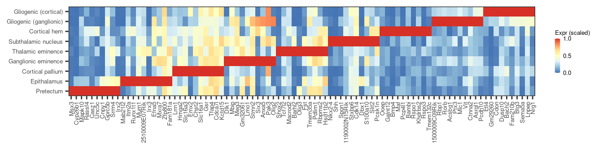
plt_cluster_marker_expr = ggplot(tbl_markers_average, aes(x=leiden_res_annot, y=geneID, fill=mean_expr)) +
geom_tile() +
scale_fill_distiller(palette = 'RdYlBu', breaks=c(0, 0.5, 1), limits=c(0,1)) +
theme_publication +
labs(x=NULL, y=NULL) +
# labs(y = "Top 10 marker genes per cluster") +
scale_x_discrete(expand = c(0,0)) +
scale_y_discrete(expand = c(0,0)) +
labs(fill="Expr (scaled)") +
theme(axis.text.x = element_text(angle = 90, vjust=0.5, hjust=1)) +
guides(fill = guide_colorbar(barwidth = 0.3,
barheight = 2))
plt_DE_marker_annot_fine_vertical = plt_cluster_marker_expr
plt_DE_marker_annot_fine_vertical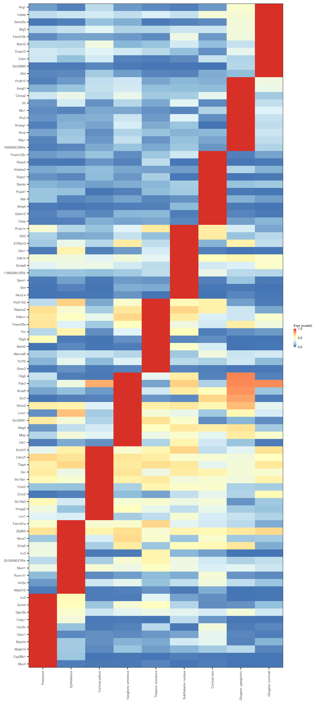
Pathways
Pathway KEGG w/o gliogenic
fileID_2 = "normal_subset_embryonic_RG_cleaned_wo_gliogenic"
tbl_AUC = read_csv(paste0("data/AUC_pathways/AUC_pathways_KEGG_", fileID_2, ".csv.gz"))
── Column specification ────────────────────────────────────────────────────────
cols(
.default = col_double(),
cellID = col_character()
)
ℹ Use `spec()` for the full column specifications.library(reshape2)
tbl_AUC_long = tbl_AUC %>%
melt(id.vars = c("cellID"),
variable.name = "pathway",
value.name= "AUC_score") %>%
as_tibble()
# filter pathways:
pathways_selected = c("mmu04066_HIF-1_signaling_pathway",
"mmu04340_Hedgehog_signaling_pathway",
"mmu04010_MAPK_signaling_pathway",
"mmu04622_RIG-I-like_receptor_signaling_pathway",
"mmu04390_Hippo_signaling_pathway",
"mmu04070_Phosphatidylinositol_signaling_system",
"mmu04020_Calcium_signaling_pathway",
"mmu04310_Wnt_signaling_pathway")
tbl_AUC_long = tbl_AUC_long %>%
filter(pathway %in% pathways_selected)
metadata_AUC = left_join(tbl_AUC_long, metadata %>% select(cellID, annot_leiden, UMAP_dim1, UMAP_dim2), by="cellID")
metadata_AUC_KEGG = metadata_AUCmetadata_scaled_AUC = metadata_AUC %>%
group_by(pathway) %>%
mutate(norm_AUC_score = scale(AUC_score)) %>%
ungroup() %>%
group_by(pathway, annot_leiden) %>%
summarise(mean_AUC_score = mean(AUC_score),
mean_norm_AUC_score = mean(norm_AUC_score)) %>%
group_by(pathway) %>%
mutate(norm_mean_AUC_score = scale(mean_AUC_score)) `summarise()` has grouped output by 'pathway'. You can override using the `.groups` argument.# data_wide <- spread(olddata_long, condition, measurement)
tbl_scores = metadata_scaled_AUC %>%
select(-c(mean_AUC_score, mean_norm_AUC_score)) %>%
tidyr::spread(pathway, norm_mean_AUC_score)
cmat = as.matrix(tbl_scores %>% select(-annot_leiden))
rownames(cmat) = tbl_scores %>% pull(annot_leiden)
c <- cor(cmat, method="spearman")
d <- as.dist(1-c) # because correlation is a similarity measure and
mat_cluster_cols <- hclust(d)
c <- cor(t(cmat), method="spearman")
d <- as.dist(1-c) # because correlation is a similarity measure and
mat_cluster_rows <- hclust(d)
order_annot = rownames(cmat)[mat_cluster_rows$order]
order_pathways = colnames(cmat)[mat_cluster_cols$order]
metadata_scaled_AUC = metadata_scaled_AUC %>%
mutate(pathway = factor(pathway, levels=order_pathways)) %>%
mutate(annot_leiden = factor(annot_leiden, levels=order_annot))plt_UMAP_AUC = ggplot(metadata_scaled_AUC, aes(x=annot_leiden, y=pathway, fill=norm_mean_AUC_score)) +
geom_tile() +
scale_colour_viridis() +
scale_fill_viridis() +
theme_publication +
scale_x_discrete(expand = c(0,0),
guide = guide_axis(angle=45)) +
scale_y_discrete(expand = c(0,0)) +
labs(x=NULL, y=NULL) +
labs(fill="AUC z-score mean")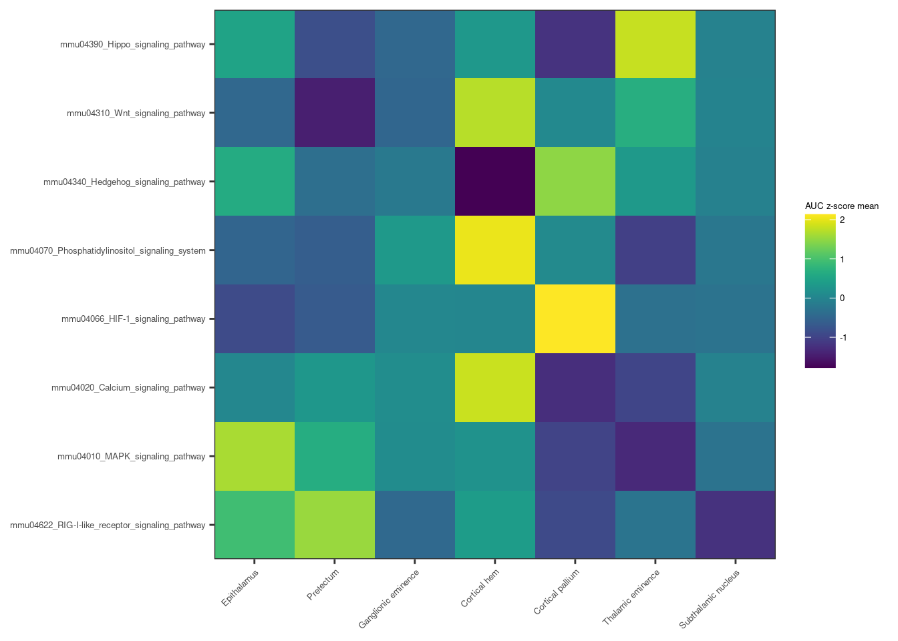
Pathway panther w/o gliogenic
fileID_2 = "normal_subset_embryonic_RG_cleaned_wo_gliogenic"
tbl_AUC = read_csv(paste0("data/AUC_pathways/AUC_pathways_panther_", fileID_2, ".csv.gz"))
── Column specification ────────────────────────────────────────────────────────
cols(
.default = col_double(),
cellID = col_character()
)
ℹ Use `spec()` for the full column specifications.library(reshape2)
tbl_AUC_long = tbl_AUC %>%
melt(id.vars = c("cellID"),
variable.name = "pathway",
value.name= "AUC_score") %>%
as_tibble()
# filter pathways:
pathways_selected = c("P04393_Ras_Pathway",
"P00026_Heterotrimeric_G-protein_signaling_pathway-Gi_alpha_and_Gs_alpha_mediated_pathway",
"P05912_Dopamine_receptor_mediated_signaling_pathway",
"P00038_JAKSTAT_signaling_pathway")
tbl_AUC_long = tbl_AUC_long %>%
filter(pathway %in% pathways_selected)
metadata_AUC = left_join(tbl_AUC_long, metadata %>% select(cellID, annot_leiden, UMAP_dim1, UMAP_dim2), by="cellID")
metadata_AUC_panther = metadata_AUCmetadata_scaled_AUC = metadata_AUC %>%
group_by(pathway) %>%
mutate(norm_AUC_score = scale(AUC_score)) %>%
ungroup() %>%
group_by(pathway, annot_leiden) %>%
summarise(mean_AUC_score = mean(AUC_score),
mean_norm_AUC_score = mean(norm_AUC_score)) %>%
group_by(pathway) %>%
mutate(norm_mean_AUC_score = scale(mean_AUC_score)) `summarise()` has grouped output by 'pathway'. You can override using the `.groups` argument.# data_wide <- spread(olddata_long, condition, measurement)
tbl_scores = metadata_scaled_AUC %>%
select(-c(mean_AUC_score, mean_norm_AUC_score)) %>%
tidyr::spread(pathway, norm_mean_AUC_score)
cmat = as.matrix(tbl_scores %>% select(-annot_leiden))
rownames(cmat) = tbl_scores %>% pull(annot_leiden)
c <- cor(cmat, method="spearman")
d <- as.dist(1-c) # because correlation is a similarity measure and
mat_cluster_cols <- hclust(d)
c <- cor(t(cmat), method="spearman")
d <- as.dist(1-c) # because correlation is a similarity measure and
mat_cluster_rows <- hclust(d)
order_annot = rownames(cmat)[mat_cluster_rows$order]
order_pathways = colnames(cmat)[mat_cluster_cols$order]
metadata_scaled_AUC = metadata_scaled_AUC %>%
mutate(pathway = factor(pathway, levels=order_pathways)) %>%
mutate(annot_leiden = factor(annot_leiden, levels=order_annot))plt_UMAP_AUC = ggplot(metadata_scaled_AUC, aes(x=annot_leiden, y=pathway, fill=norm_mean_AUC_score)) +
geom_tile() +
scale_colour_viridis() +
scale_fill_viridis() +
theme_publication +
scale_x_discrete(expand = c(0,0),
guide = guide_axis(angle=45)) +
scale_y_discrete(expand = c(0,0)) +
labs(x=NULL, y=NULL) +
labs(fill="AUC z-score mean")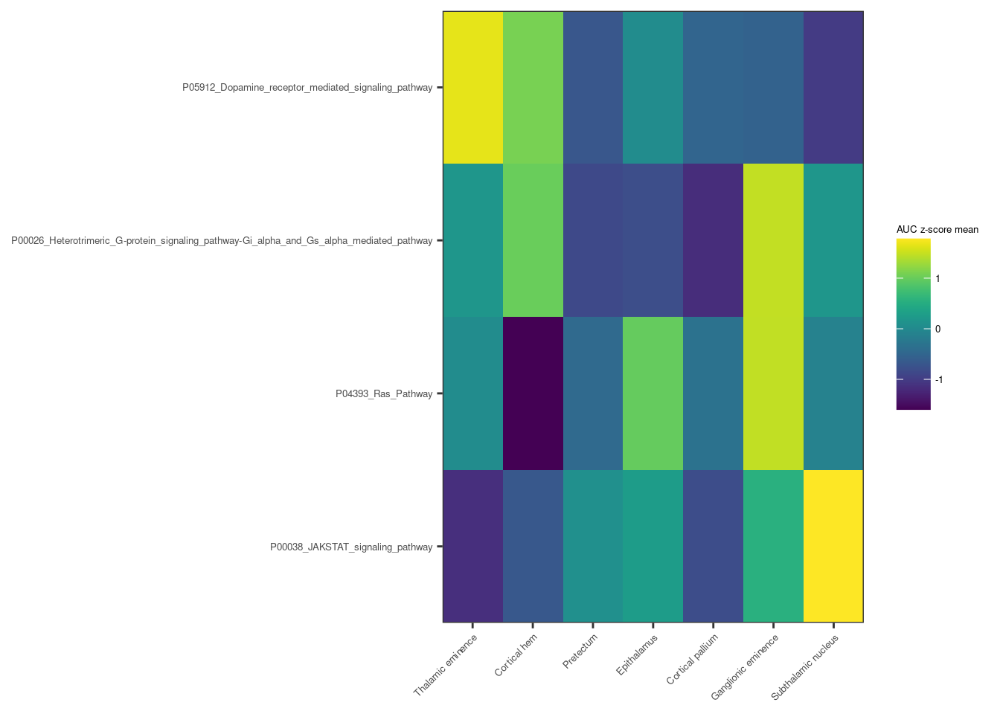
Merged pathways
metadata_AUC = bind_rows(metadata_AUC_KEGG, metadata_AUC_panther)
metadata_scaled_AUC = metadata_AUC %>%
group_by(pathway) %>%
mutate(norm_AUC_score = scale(AUC_score)) %>%
ungroup() %>%
group_by(pathway, annot_leiden) %>%
summarise(mean_AUC_score = mean(AUC_score),
mean_norm_AUC_score = mean(norm_AUC_score)) %>%
group_by(pathway) %>%
mutate(norm_mean_AUC_score = scale(mean_AUC_score)) `summarise()` has grouped output by 'pathway'. You can override using the `.groups` argument.# data_wide <- spread(olddata_long, condition, measurement)
tbl_scores = metadata_scaled_AUC %>%
select(-c(mean_AUC_score, mean_norm_AUC_score)) %>%
tidyr::spread(pathway, norm_mean_AUC_score)
cmat = as.matrix(tbl_scores %>% select(-annot_leiden))
rownames(cmat) = tbl_scores %>% pull(annot_leiden)
c <- cor(cmat, method="spearman")
d <- as.dist(1-c) # because correlation is a similarity measure and
mat_cluster_cols <- hclust(d)
c <- cor(t(cmat), method="spearman")
d <- as.dist(1-c) # because correlation is a similarity measure and
mat_cluster_rows <- hclust(d)
order_annot = rownames(cmat)[mat_cluster_rows$order]
order_pathways = colnames(cmat)[mat_cluster_cols$order]
metadata_scaled_AUC = metadata_scaled_AUC %>%
mutate(pathway = factor(pathway, levels=order_pathways)) %>%
mutate(annot_leiden = factor(annot_leiden, levels=order_annot))plt_UMAP_AUC = ggplot(metadata_scaled_AUC, aes(x=annot_leiden, y=pathway, fill=norm_mean_AUC_score)) +
geom_tile() +
scale_colour_viridis() +
scale_fill_viridis() +
theme_publication +
scale_x_discrete(expand = c(0,0),
guide = guide_axis(angle=45)) +
scale_y_discrete(expand = c(0,0)) +
labs(x=NULL, y=NULL) +
labs(fill="AUC z-score mean")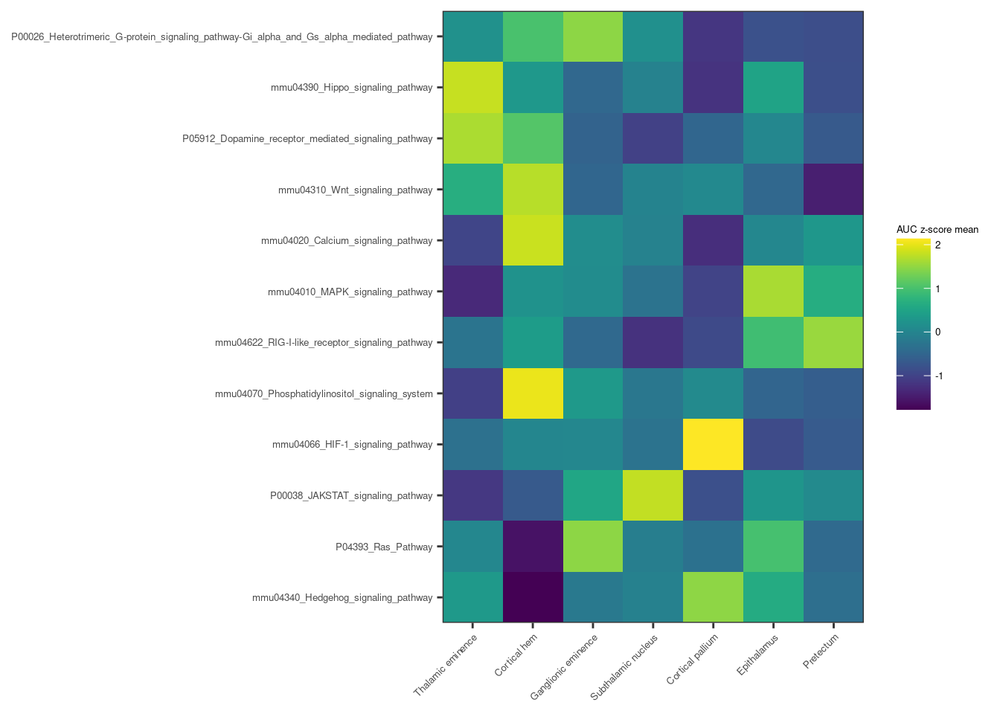
Manual order
pathways_selected = c("mmu04622_RIG-I-like_receptor_signaling_pathway",
"mmu04010_MAPK_signaling_pathway",
"mmu04340_Hedgehog_signaling_pathway",
"mmu04066_HIF-1_signaling_pathway",
"P04393_Ras_Pathway",
"P00026_Heterotrimeric_G-protein_signaling_pathway-Gi_alpha_and_Gs_alpha_mediated_pathway",
"mmu04390_Hippo_signaling_pathway",
"P05912_Dopamine_receptor_mediated_signaling_pathway",
"P00038_JAKSTAT_signaling_pathway",
"mmu04310_Wnt_signaling_pathway",
"mmu04020_Calcium_signaling_pathway",
"mmu04070_Phosphatidylinositol_signaling_system")
tbl_pathway_labels = read_csv("data/AUC_pathways/pathway_labels.csv")
── Column specification ────────────────────────────────────────────────────────
cols(
pathwayID = col_character(),
pathway_label = col_character()
)tbl_pathway_labels_ordered = left_join(tibble(pathwayID = pathways_selected), tbl_pathway_labels, by="pathwayID")
annot_order = c("Pretectum",
"Epithalamus",
"Cortical pallium",
"Ganglionic eminence",
"Thalamic eminence",
"Subthalamic nucleus",
"Cortical hem")
metadata_scaled_AUC = metadata_scaled_AUC %>%
filter(pathway %in% pathways_selected) %>%
mutate(pathwayID = factor(pathway, levels=pathways_selected)) %>%
mutate(annot_leiden = factor(annot_leiden, levels=annot_order)) %>%
left_join(tbl_pathway_labels, by="pathwayID") %>%
mutate(pathway_label = factor(pathway_label, levels = tbl_pathway_labels_ordered$pathway_label))plt_UMAP_AUC = ggplot(metadata_scaled_AUC, aes(x=annot_leiden, y=pathway_label, fill=norm_mean_AUC_score)) +
geom_tile() +
scale_colour_viridis() +
scale_fill_viridis() +
theme_publication +
scale_x_discrete(expand = c(0,0),
guide = guide_axis(angle=45)) +
scale_y_discrete(expand = c(0,0)) +
labs(x=NULL, y=NULL) +
labs(fill="AUC z-score mean") +
guides(fill = guide_colorbar(barwidth = 0.3,
barheight = 2))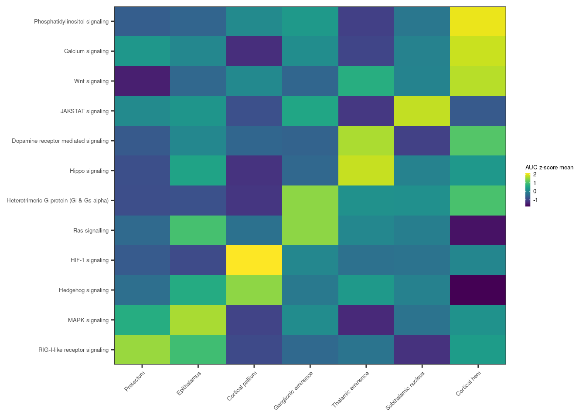
metadata_scaled_AUC = metadata_AUC %>%
filter(pathway %in% pathways_selected) %>%
group_by(pathway, annot_leiden) %>%
summarise(mean_AUC_score = mean(AUC_score)) %>%
group_by(pathway) %>%
mutate(norm_0_1_mean_AUC_score = (mean_AUC_score - min(mean_AUC_score))/(max(mean_AUC_score) - min(mean_AUC_score))) %>%
mutate(pathway = factor(pathway, levels=pathways_selected)) %>%
mutate(annot_leiden = factor(annot_leiden, levels=annot_order)) %>%
mutate(pathwayID = pathway) %>%
left_join(tbl_pathway_labels, by="pathwayID") %>%
mutate(pathway_label = factor(pathway_label, levels = tbl_pathway_labels_ordered$pathway_label))`summarise()` has grouped output by 'pathway'. You can override using the `.groups` argument.plt_UMAP_AUC = ggplot(metadata_scaled_AUC, aes(x=annot_leiden, y=pathway_label, fill=norm_0_1_mean_AUC_score)) +
geom_tile() +
scale_colour_viridis() +
scale_fill_viridis() +
theme_publication +
scale_x_discrete(expand = c(0,0),
guide = guide_axis(angle=45)) +
scale_y_discrete(expand = c(0,0)) +
labs(x=NULL, y=NULL) +
labs(fill="AUC scaled mean") +
guides(fill = guide_colorbar(barwidth = 0.3,
barheight = 2))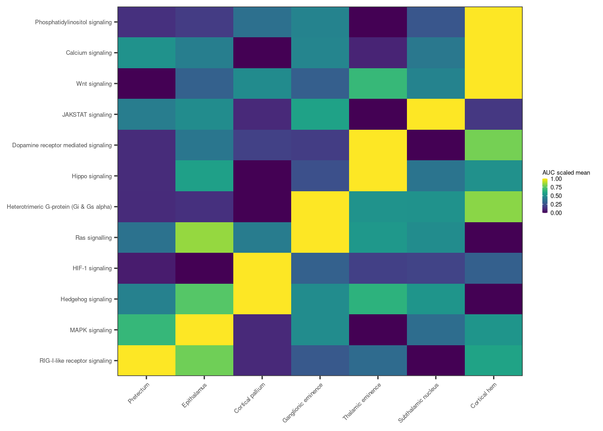
plt_UMAP_AUC = ggplot(metadata_scaled_AUC, aes(x=annot_leiden, y=pathway_label, fill=norm_0_1_mean_AUC_score)) +
geom_tile() +
scale_colour_viridis() +
scale_fill_distiller(palette = 'RdBu', breaks=c(0, 0.5, 1), limits=c(0,1)) +
theme_publication +
scale_x_discrete(expand = c(0,0),
guide = guide_axis(angle=45)) +
scale_y_discrete(expand = c(0,0)) +
labs(x=NULL, y=NULL) +
labs(fill="AUC scaled mean") +
guides(fill = guide_colorbar(barwidth = 0.3,
barheight = 2))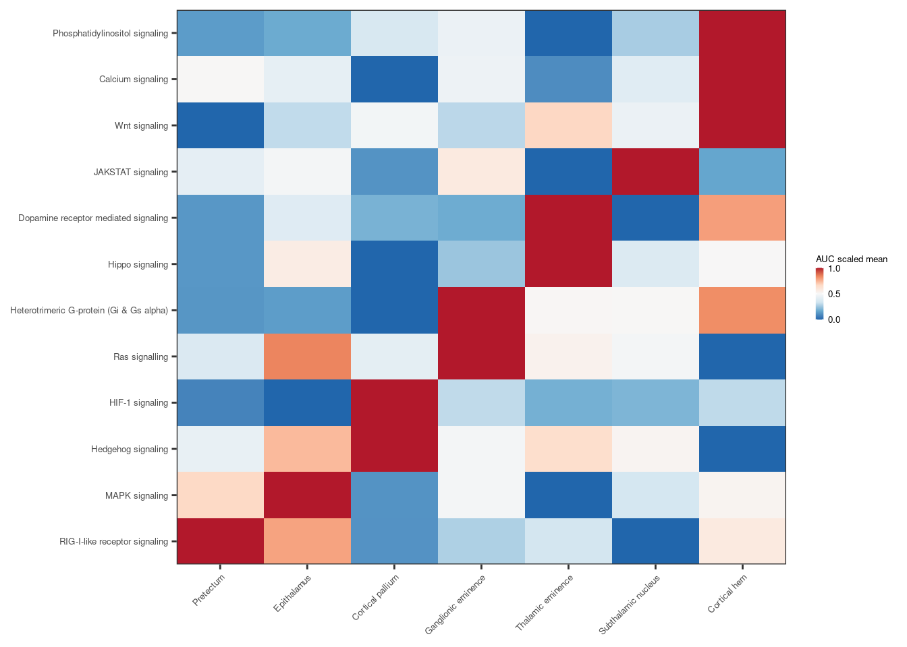
SCENIC
source("code/core_functions_supp.R")
fileID = "normal_subset_embryonic_RG_cleaned"
# annot_order = c("Epithalamus",
# "Gliogenic (cortical)",
# "Ganglionic eminence",
# "Cortical pallium",
# "Thalamic eminence",
# "Gliogenic (ganglionic)",
# "Cortical hem",
# "Pretectum",
# "Subthalamic nucleus")
tbl_scenic_auc = read.csv(paste0("data/scenic/auc_mtx_", fileID, ".csv.gz"), row.names=1, check.names=FALSE)
tbl_scenic_auc_z_score = as_tibble(scale(tbl_scenic_auc), rownames="cellID")
tbl_scenic_rss_group = read_csv(paste0("data/scenic/rss_normal_subset_embryonic_RG_cleaned_leiden_0_33.csv.gz")) %>%
rename(group = X1)
metadata_scenic = left_join(metadata %>% select(cellID, annot_leiden), as_tibble(tbl_scenic_auc, rownames="cellID"), by="cellID")
library(reshape2)
metadata_scenic_long = metadata_scenic %>%
melt(id.vars = c("cellID", "annot_leiden"),
variable.name = "pathway",
value.name= "AUC_score") %>%
as_tibble()
metadata = metadata %>%
mutate(group_num = get(leiden_res)) %>%
mutate(group = get(leiden_res_annot)) %>%
mutate(group = factor(group, levels=annot_order))# plt_scenic_top10 = plt_heatmap_scenic(tbl_scenic_auc_z_score, tbl_scenic_rss_group, metadata, n_genes = 10)
# plt_scenic_top10topreg = c()
n_genes = 10
num_order = metadata %>%
select(group, group_num) %>%
distinct() %>%
arrange(group) %>%
pull(group_num) %>%
as.vector()
for (groupID in num_order){
top_group = tbl_scenic_rss_group %>%
filter(group == groupID) %>%
melt(id.vars="group") %>%
as_tibble() %>%
arrange(desc(value)) %>%
head(n_genes) %>%
pull(variable) %>%
as.vector()
topreg = c(topreg, top_group)
}
metadata_scenic_long = metadata_scenic_long %>%
filter(pathway %in% topreg)metadata_scaled_AUC = metadata_scenic_long %>%
group_by(pathway) %>%
mutate(norm_AUC_score = scale(AUC_score)) %>%
ungroup() %>%
group_by(pathway, annot_leiden) %>%
summarise(mean_AUC_score = mean(AUC_score),
mean_norm_AUC_score = mean(norm_AUC_score)) %>%
group_by(pathway) %>%
mutate(norm_mean_AUC_score = scale(mean_AUC_score)) `summarise()` has grouped output by 'pathway'. You can override using the `.groups` argument.# data_wide <- spread(olddata_long, condition, measurement)
tbl_scores = metadata_scaled_AUC %>%
select(-c(mean_AUC_score, mean_norm_AUC_score)) %>%
tidyr::spread(pathway, norm_mean_AUC_score)
cmat = as.matrix(tbl_scores %>% select(-annot_leiden))
rownames(cmat) = tbl_scores %>% pull(annot_leiden)
c <- cor(cmat, method="spearman")
d <- as.dist(1-c) # because correlation is a similarity measure and
mat_cluster_cols <- hclust(d)
c <- cor(t(cmat), method="spearman")
d <- as.dist(1-c) # because correlation is a similarity measure and
mat_cluster_rows <- hclust(d)
order_annot = rownames(cmat)[mat_cluster_rows$order]
order_pathways = colnames(cmat)[mat_cluster_cols$order]
metadata_scaled_AUC = metadata_scaled_AUC %>%
mutate(pathway = factor(pathway, levels=order_pathways)) %>%
mutate(annot_leiden = factor(annot_leiden, levels=order_annot))plt_UMAP_SCENIC = ggplot(metadata_scaled_AUC, aes(x=annot_leiden, y=pathway, fill=norm_mean_AUC_score)) +
geom_tile() +
scale_colour_viridis() +
scale_fill_viridis() +
theme_publication +
scale_x_discrete(expand = c(0,0),
guide = guide_axis(angle=45)) +
scale_y_discrete(expand = c(0,0)) +
labs(x=NULL, y=NULL) +
labs(fill="AUC z-score mean")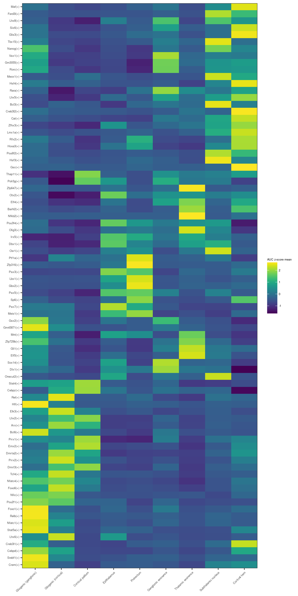
metadata_scaled_AUC = metadata_scaled_AUC %>%
mutate(pathway = factor(pathway, levels=unique(topreg))) %>%
mutate(annot_leiden = factor(annot_leiden, levels=order_annot))plt_UMAP_SCENIC = ggplot(metadata_scaled_AUC, aes(x=annot_leiden, y=pathway, fill=norm_mean_AUC_score)) +
geom_tile() +
scale_colour_viridis() +
scale_fill_viridis() +
theme_publication +
scale_x_discrete(expand = c(0,0),
guide = guide_axis(angle=45)) +
scale_y_discrete(expand = c(0,0)) +
labs(x=NULL, y=NULL) +
labs(fill="AUC z-score mean")
SCENIC w/0 gliogenic
source("code/core_functions_supp.R")
fileID = "normal_subset_embryonic_RG_cleaned_wo_gliogenic"
leiden_res = 'annot_superset_num'
leiden_res_annot = 'annot_superset'
adata_path = paste0('data/forebrain_', fileID, '.h5ad')
celltype_colours = embryonic_RG_colours
colour_celltypes = embryonic_RG_colours
annot_order = c("Pretectum",
"Epithalamus",
"Cortical pallium",
"Ganglionic eminence",
"Thalamic eminence",
"Subthalamic nucleus",
"Cortical hem")
#repl_python()
py_run_string("import numpy as np")
py_run_string("import anndata as ad")
py_run_string("adata = ad.read_h5ad(r.adata_path)")
metadata_scanpy = as_tibble(py$adata$obs, rownames="cellID") %>%
rename(mt_frac = percent_mito) %>%
mutate(UMAP_dim1 = py$adata$obsm[['X_umap']][,1],
UMAP_dim2 = py$adata$obsm[['X_umap']][,2])
metadata_experiment = read_tsv("data/metadata_experiment.tsv")
results_cyclone = read_csv("data/cyclone/cyclone_merged.csv.gz", col_types="ccddd") %>%
mutate(sampleID = sapply(cellID, function(cell) strsplit(cell, split="-")[[1]][3])) %>%
left_join(metadata_experiment, by="sampleID") %>%
mutate(cellID = gsub("-1", "", cellID)) %>%
select(cellID, cyclone, cyclone_G1, cyclone_S, cyclone_G2M)
results_logreg = read_csv(paste0("data/logreg/logreg_Zeisel_2018_normal.csv.gz"))
# filter QC
metadata = left_join(metadata_scanpy, results_cyclone, by="cellID") %>%
mutate(cyclone = factor(cyclone, levels=c("G1", "S", "G2M"))) %>%
mutate(timepoint = factor(timepoint, levels=unique(timepoint)[order(unique(postnatal_day))])) %>%
left_join(results_logreg, by="cellID") %>%
mutate(leiden = get(leiden_res)) %>%
mutate(annot_leiden = get(leiden_res_annot))
tbl_scenic_auc = read.csv(paste0("data/scenic/auc_mtx_", fileID, ".csv.gz"), row.names=1, check.names=FALSE)
tbl_scenic_auc_z_score = as_tibble(scale(tbl_scenic_auc), rownames="cellID")
tbl_scenic_rss_group = read_csv(paste0("data/scenic/rss_normal_subset_embryonic_RG_cleaned_wo_gliogenic_annot_superset_num.csv.gz")) %>%
rename(group = X1)
metadata_scenic = left_join(metadata %>% select(cellID, annot_leiden), as_tibble(tbl_scenic_auc, rownames="cellID"), by="cellID")
library(reshape2)
metadata_scenic_long = metadata_scenic %>%
melt(id.vars = c("cellID", "annot_leiden"),
variable.name = "pathway",
value.name= "AUC_score") %>%
as_tibble()
metadata = metadata %>%
mutate(group_num = get(leiden_res)) %>%
mutate(group = get(leiden_res_annot)) %>%
mutate(group = factor(group, levels=annot_order))# plt_scenic_top10 = plt_heatmap_scenic(tbl_scenic_auc_z_score, tbl_scenic_rss_group, metadata, n_genes = 10)
# plt_scenic_top10topreg = c()
n_genes = 10
num_order = metadata %>%
select(group, group_num) %>%
distinct() %>%
arrange(group) %>%
pull(group_num) %>%
as.vector()
for (groupID in num_order){
top_group = tbl_scenic_rss_group %>%
filter(group == groupID) %>%
melt(id.vars="group") %>%
as_tibble() %>%
arrange(desc(value)) %>%
head(n_genes) %>%
pull(variable) %>%
as.vector()
topreg = c(topreg, top_group)
}
metadata_scenic_long = metadata_scenic_long %>%
filter(pathway %in% topreg)metadata_scaled_AUC = metadata_scenic_long %>%
group_by(pathway) %>%
mutate(norm_AUC_score = scale(AUC_score)) %>%
ungroup() %>%
group_by(pathway, annot_leiden) %>%
summarise(mean_AUC_score = mean(AUC_score),
mean_norm_AUC_score = mean(norm_AUC_score)) %>%
group_by(pathway) %>%
mutate(norm_mean_AUC_score = scale(mean_AUC_score)) `summarise()` has grouped output by 'pathway'. You can override using the `.groups` argument.# data_wide <- spread(olddata_long, condition, measurement)
tbl_scores = metadata_scaled_AUC %>%
select(-c(mean_AUC_score, mean_norm_AUC_score)) %>%
tidyr::spread(pathway, norm_mean_AUC_score)
cmat = as.matrix(tbl_scores %>% select(-annot_leiden))
rownames(cmat) = tbl_scores %>% pull(annot_leiden)
c <- cor(cmat, method="spearman")
d <- as.dist(1-c) # because correlation is a similarity measure and
mat_cluster_cols <- hclust(d)
c <- cor(t(cmat), method="spearman")
d <- as.dist(1-c) # because correlation is a similarity measure and
mat_cluster_rows <- hclust(d)
order_annot = rownames(cmat)[mat_cluster_rows$order]
order_pathways = colnames(cmat)[mat_cluster_cols$order]
metadata_scaled_AUC = metadata_scaled_AUC %>%
mutate(pathway = factor(pathway, levels=order_pathways)) %>%
mutate(annot_leiden = factor(annot_leiden, levels=annot_order))plt_UMAP_SCENIC = ggplot(metadata_scaled_AUC, aes(x=annot_leiden, y=pathway, fill=norm_mean_AUC_score)) +
geom_tile() +
scale_colour_viridis() +
scale_fill_viridis() +
theme_publication +
scale_x_discrete(expand = c(0,0),
guide = guide_axis(angle=45)) +
scale_y_discrete(expand = c(0,0)) +
labs(x=NULL, y=NULL) +
labs(fill="AUC z-score mean")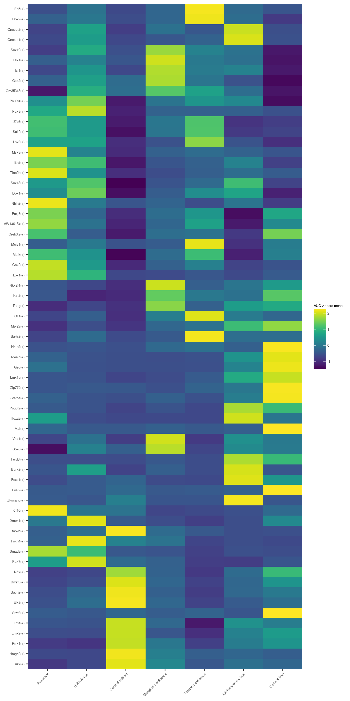
metadata_scaled_AUC = metadata_scaled_AUC %>%
mutate(pathway = factor(pathway, levels=unique(topreg))) %>%
mutate(annot_leiden = factor(annot_leiden, levels=annot_order))plt_UMAP_SCENIC_vertical = ggplot(metadata_scaled_AUC, aes(x=annot_leiden, y=pathway, fill=norm_mean_AUC_score)) +
geom_tile() +
scale_colour_viridis() +
# scale_fill_viridis() +
scale_fill_gradient2(low = "magenta", mid = "black", high = "yellow") +
theme_publication +
scale_x_discrete(expand = c(0,0),
guide = guide_axis(angle=45)) +
scale_y_discrete(expand = c(0,0)) +
labs(x=NULL, y=NULL) +
labs(fill="AUC z-score mean") +
guides(fill = guide_colorbar(barwidth = 0.3,
barheight = 2))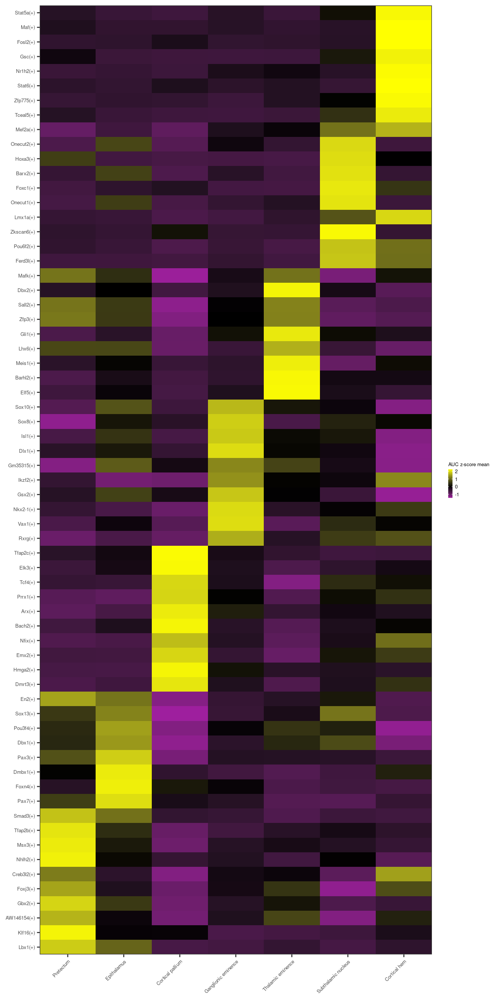
plt_UMAP_SCENIC_horizontal = ggplot(metadata_scaled_AUC, aes(x=pathway, y=annot_leiden, fill=norm_mean_AUC_score)) +
geom_tile() +
scale_colour_viridis() +
# scale_fill_viridis() +
scale_fill_gradient2(low = "magenta", mid = "black", high = "yellow") +
theme_publication +
scale_x_discrete(expand = c(0,0),
guide = guide_axis(angle=90)) +
scale_y_discrete(expand = c(0,0)) +
labs(x=NULL, y=NULL) +
labs(fill="AUC z-score mean") +
guides(fill = guide_colorbar(barwidth = 0.3,
barheight = 2))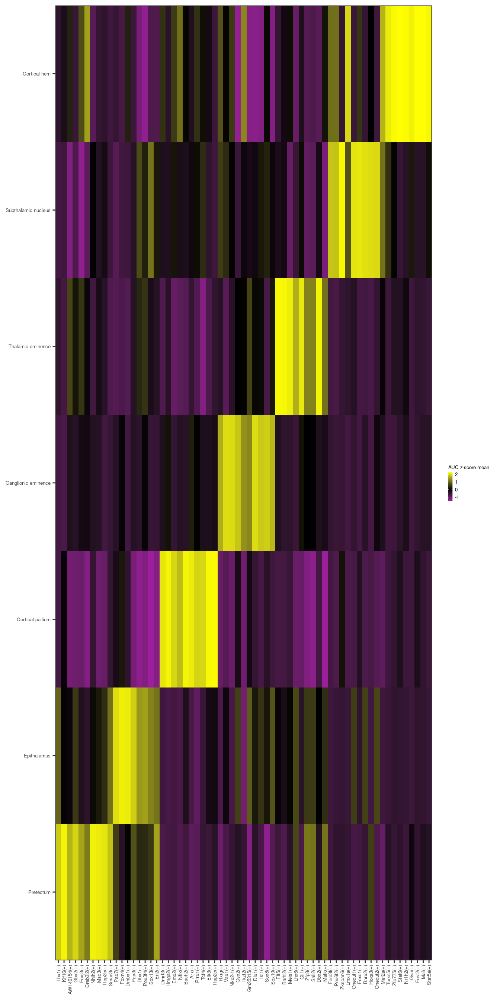
Export figures
ggsave("figures/figure_embryonic_RG/UMAP_annot_embryonic_RG.pdf", plot = plt_UMAP_annot_embryonic_RG,
height=6, width=8, units="cm")
ggsave("figures/figure_embryonic_RG/UMAP_timepoints_velocyto_embryonic_RG.pdf", plot = plt_velocyto,
height=6, width=8, units="cm")
ggsave("figures/figure_embryonic_RG/heatmap_manual_markers_embryonic_RG.pdf", plot = plt_cluster_marker_expr_embryonic_RG,
height=3.3, width=10.3, units="cm")
ggsave("figures/figure_embryonic_RG/dotplot_manual_markers_embryonic_RG.pdf", plot = plt_DE_dotplot_embryonic_RG,
height=3.3, width=10.3, units="cm")
ggsave("figures/figure_embryonic_RG/barplot_cluster_frequencies_norm_annot_embryonic_RG_v1.pdf", plot = plt_cluster_frac_norm_annot_v1, height=2.7, width=8.3, units="cm")
ggsave("figures/figure_embryonic_RG/barplot_cluster_frequencies_norm_annot_embryonic_RG_v2.pdf", plot = plt_cluster_frac_norm_annot_v2, height=2.7, width=8.3, units="cm")
ggsave("figures/figure_embryonic_RG/barplot_cluster_frequencies_norm_timepoint_annot_embryonic_timepoint_embryonic_RG_v1.pdf", plot = plt_cluster_frac_norm_annot_timepoint_embryonic_v1, height=2.7, width=8.3, units="cm")
ggsave("figures/figure_embryonic_RG/barplot_cluster_frequencies_norm_timepoint_annot_embryonic_timepoint_embryonic_RG_v2.pdf", plot = plt_cluster_frac_norm_annot_timepoint_embryonic_v2, height=2.7, width=8.3, units="cm")
ggsave("figures/figure_embryonic_RG/heatmap_DE_markers_top_10_annot_embryonic_RG_horizontal.pdf", plot = plt_DE_marker_annot_fine_horizontal, height=4, width=18.3, units="cm")
ggsave("figures/figure_embryonic_RG/heatmap_DE_markers_top_10_annot_embryonic_RG_vertical.pdf", plot = plt_DE_marker_annot_fine_vertical, height=15.3, width=6, units="cm")
ggsave("figures/figure_embryonic_RG/heatmap_pathway_AUC_annot_embryonic_RG_vertical.pdf", plot = plt_UMAP_AUC, height=5, width=9, units="cm")
ggsave("figures/figure_embryonic_RG/heatmap_SCENIC_annot_embryonic_RG_vertical.pdf", plot = plt_UMAP_SCENIC_vertical, height=11, width=6, units="cm")
ggsave("figures/figure_embryonic_RG/heatmap_SCENIC_annot_embryonic_RG_horizontal.pdf", plot = plt_UMAP_SCENIC_horizontal, height=4, width=18.3, units="cm")
R version 4.0.3 (2020-10-10)
Platform: x86_64-pc-linux-gnu (64-bit)
Running under: Ubuntu 20.04.2 LTS
Matrix products: default
BLAS: /usr/lib/x86_64-linux-gnu/blas/libblas.so.3.9.0
LAPACK: /usr/lib/x86_64-linux-gnu/lapack/liblapack.so.3.9.0
locale:
[1] LC_CTYPE=en_GB.UTF-8 LC_NUMERIC=C
[3] LC_TIME=en_GB.UTF-8 LC_COLLATE=en_GB.UTF-8
[5] LC_MONETARY=en_GB.UTF-8 LC_MESSAGES=en_GB.UTF-8
[7] LC_PAPER=en_GB.UTF-8 LC_NAME=C
[9] LC_ADDRESS=C LC_TELEPHONE=C
[11] LC_MEASUREMENT=en_GB.UTF-8 LC_IDENTIFICATION=C
attached base packages:
[1] grid stats graphics grDevices utils datasets methods
[8] base
other attached packages:
[1] RColorBrewer_1.1-2 png_0.1-7 ggthemes_4.2.4 reshape2_1.4.4
[5] ggrastr_0.2.3 reticulate_1.18 kableExtra_1.3.4 knitr_1.31
[9] tibble_3.1.0 dplyr_1.0.4 readr_1.4.0 ggrepel_0.9.1
[13] patchwork_1.1.1 viridis_0.5.1 viridisLite_0.3.0 ggplot2_3.3.3
[17] workflowr_1.6.2
loaded via a namespace (and not attached):
[1] Rcpp_1.0.6 svglite_2.0.0 lattice_0.20-41 tidyr_1.1.2
[5] ps_1.6.0 assertthat_0.2.1 rprojroot_2.0.2 digest_0.6.27
[9] utf8_1.1.4 R6_2.5.0 plyr_1.8.6 evaluate_0.14
[13] highr_0.8 httr_1.4.2 pillar_1.5.0 rlang_0.4.10
[17] rstudioapi_0.13 jquerylib_0.1.3 Matrix_1.3-2 rmarkdown_2.7
[21] labeling_0.4.2 webshot_0.5.2 stringr_1.4.0 munsell_0.5.0
[25] compiler_4.0.3 httpuv_1.5.5 vipor_0.4.5 xfun_0.21
[29] pkgconfig_2.0.3 systemfonts_1.0.1 ggbeeswarm_0.6.0 htmltools_0.5.1.1
[33] tidyselect_1.1.0 gridExtra_2.3 fansi_0.4.2 crayon_1.4.1
[37] withr_2.4.1 later_1.1.0.1 rappdirs_0.3.3 jsonlite_1.7.2
[41] gtable_0.3.0 lifecycle_1.0.0 DBI_1.1.1 git2r_0.28.0
[45] magrittr_2.0.1 scales_1.1.1 cli_2.3.1 stringi_1.5.3
[49] farver_2.1.0 fs_1.5.0 promises_1.2.0.1 xml2_1.3.2
[53] bslib_0.2.4 ellipsis_0.3.1 generics_0.1.0 vctrs_0.3.6
[57] Cairo_1.5-12.2 tools_4.0.3 glue_1.4.2 beeswarm_0.2.3
[61] purrr_0.3.4 hms_1.0.0 yaml_2.2.1 colorspace_2.0-0
[65] rvest_0.3.6 sass_0.3.1